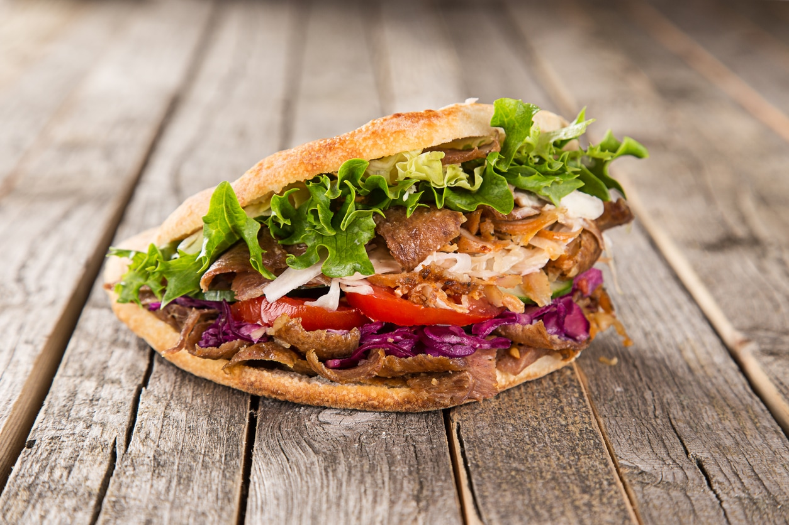

My Special Döner Recipe

Description: My doner kebab recipe is a close rendition that gives you tantalizing, thinly shaved grilled chicken that you can serve in wraps, platters, or over your favorite salad (I tried it over fattoush recently).
Ingredients:
- 500g lamb mince
- 1 small onion
- 4 garlic cloves - minced or finely grated
- 100g fresh breadcrumbs
- 2 tsp ground cumin
- 2 tsp ground coriander
- 1 tsp dried oregano
- 1/4 tsp smoked paprika
- sunflower oil - for oiling
- Heat the oven to 200C/180C fan/gas 6. Tip all the ingredients except the oil into a food processor with a large pinch of salt and lots of ground pepper. Pulse until everything is combined and chopped together. You can also just squish everything together in a bowl but this will give you a looser finish.
- Oil a large sheet of foil, tip the meat mix in the middle and mould to a very thick sausage, roughly the shape of an aubergine. Roll up the foil tightly, twisting up the ends to create a Christmas cracker shape.
- Lay on a shallow roasting tin and roast in the oven for 35-40 mins, turning occasionally, or until a digital cooking thermometer reads 75C when pierced in the middle. Leave the kebab to cool a little, then unwrap the foil. Place back on the tray and brown under the grill or with a blowtorch.
- lace on a board and carve into thin slices. For full doner mode, you can hold the kebab up with a roasting fork or metal skewer and carve. Serve with warm pitta bread and any of the other accompaniments, including our chilli sauce and garlic yogurt sauce.
Home